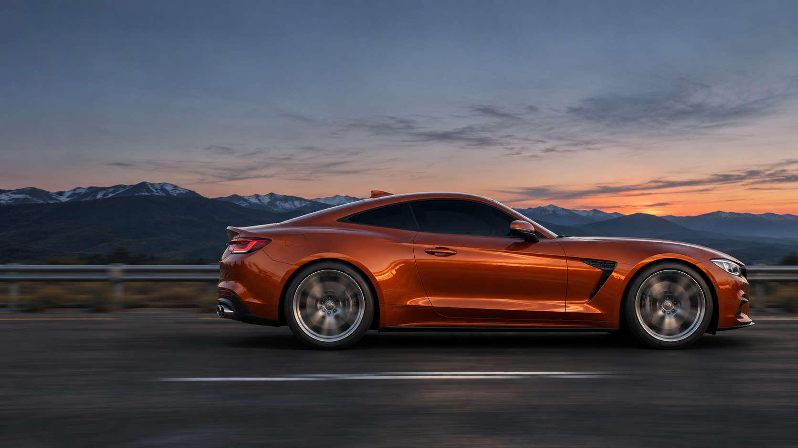

EXHAUST / MOTION LAB
도로를 깨우는 배기의 리듬
회전하는 바퀴, 터져 나오는 굉음, 뒤로 흩어지는 연기.

CINEMATIC EXHAUST STUDY
km/h · 연출 속도
ENGINE SOUND OFFHarley-Davidson Sportster 시동·공회전·스로틀 녹음 · demodave / Freesound · CC0
주행 속도 조절은 영상 연출에만 적용됩니다.
AI로 생성한 실사풍 차량 이미지이며 할리데이비슨 오토바이의 모습은 아닙니다.
엔진음 출처 · CC0 ↗